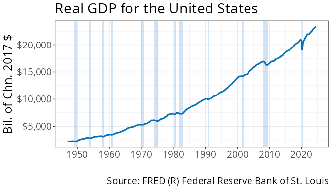
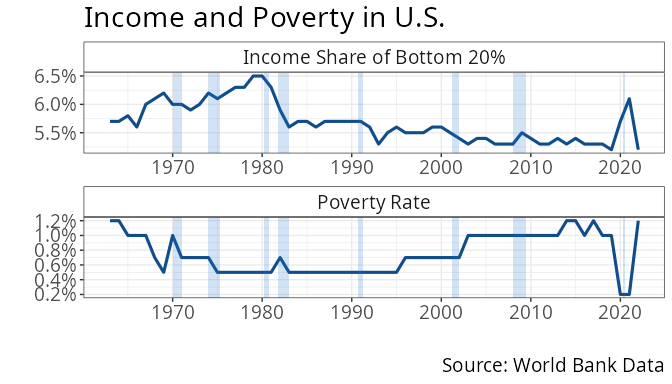

Getting Started with the ECODATA Package
James M. Murray
University of Wisconsin-La Crossejmurray@uwlax.edu
Created on October 31, 2024
getting-started.RmdBy the end of this vignette you will be able to download data from FRED (Federal Reserve Economic Data) or World Bank Data, create professional, publication-ready visualizations; and document your data, and accomplish all of it with as little as three lines of code.
About the Package
This package makes it easy to download and visualize economic data that is publicly available on FRED (Federal Reserve Economic Data) or World Bank Data. This package is a wrapper for three packages:
The wbstats package for downloading data from World Bank Data
The ggplot2 package for visualizing data
The ecodata package is primarily targeted to novice R users and its primary intention to make the easy things easier. Still, experienced R users might find some of the procedures in this package convenient. With just two or three lines of code, you can use the package to download several variables from FRED and/or World Bank and make professional publication-ready plots. The package also provides a unified framework for downloading and plotting data from either source.
This package is not intended to replace fredr or wbstats. Those packages include a large amount of functionality which is not duplicated in this package. Experienced R programmers that have more than the simplest needs are best served from the underlying packages, fredr, wbstats, and ggplot2.
The package also does not replace browsing the FRED or World Bank Data websites to explore and interact with data. In fact, the package provides the next step. After browsing and finding data you are interested in, you just need to copy and paste the URL(s) to retrieve the data using the functions in this package.
Installation
Install from Github
The package is available on Github at https://github.com/murraylax/ecodata. Use the devtools package to install directly in R:
Set up
Load the library:
library(ecodata)The package uses the FRED (Federal Reserve Economic Data) API, which
requires an API key. If you have not already done so, you must create an
account at
https://fred.stlouisfed.org/,
log in, then go to https://fredaccount.stlouisfed.org/apikeys to create an
API key. Click the button, + Request API Key and follow
instructions. When complete, you will have an API key that will be a 32
character string with letters and numbers, similar to
‘abcd1234efgh5678ijkl9012mnop3456’ (this is a fictional key, it will not
work to use exactly this string).
Set up the API key to use in the ecodata package (and/or the fredr package) by entering the following in the R console (replace the string with your own key):
ecodata_set_fredkey("abcd1234efgh5678ijkl9012mnop3456")You should only need to do the above once per machine, then the FRED API should be available every time you load R.
If you find that you need to set the FRED key again, you can do so directly from the fredr package.
fredr::fredr_set_key("abcd1234efgh5678ijkl9012mnop3456")Download and Plot your First Variable
Load libraries
To begin, let us load the tidyverse library to
wrangle and manipulate the data, and then the ecodata
package.
Download the data
Next, let’s download a variable from FRED and inspect it. We will download data on real GDP for the United States, which is available on FRED at https://fred.stlouisfed.org/series/GDPC1.
gdp <- get_ecodata("https://fred.stlouisfed.org/series/GDPC1")Here is a look at the first ten rows of the data set.
Date |
Real Gross Domestic Product |
|---|---|
1947-01-01 |
2,182.681 |
1947-04-01 |
2,176.892 |
1947-07-01 |
2,172.432 |
1947-10-01 |
2,206.452 |
1948-01-01 |
2,239.682 |
1948-04-01 |
2,276.690 |
1948-07-01 |
2,289.770 |
1948-10-01 |
2,292.364 |
1949-01-01 |
2,260.807 |
1949-04-01 |
2,253.128 |
Make a time series plot
You can use the ggplot_ecodata_ts() function with a
single parameter to make a time series plot the data.
ggplot_ecodata_ts(gdp)Notice the default features such as a clean simple plot, large text
that is ready for presentations, and the citation of the source of the
data in the caption of the figure. These are elements of a
ggplot that users could choose to change.
You can add a title one of two ways. The first is to pass the
optional parameter, title:
ggplot_ecodata_ts(gdp, title = "Real GDP for the United States")
The other is to use the labs() function for adding or
changing labels, which is provided by the ggplot2 package. This
approach is likely familiar to experienced R users.
ggplot_ecodata_ts(gdp) + labs(title = "Real GDP for the United States")You can add NBER recession bars with one of two ways. The simplest is
the addition of the optional plot.recessions parameter:
# Include recession bars with a parameter
ggplot_ecodata_ts(gdp, title = "Real GDP for the United States", plot.recessions = TRUE)
R users already familiar with ggplot() may be more
comfortable adding recession bars by adding a
geom_recession(), a geom that is unique to this
package.
# Include recession bars by adding a geom
ggplot_ecodata_ts(gdp) +
labs(title = "Real GDP for the United States") +
geom_recession()
Select date range
Use the tools in the dplyr package in combination with
ecodata functions to select a range of dates to plot. Suppose
we want to plot real GDP over the years 2000-2023. The code below starts
with our data frame, filters out the appropriate dates, then passes the
filtered data to ggplot_ecodata_ts().
gdp |>
filter(Date >= "2000-01-01", Date <= "2023-12-31") |>
ggplot_ecodata_ts(title = "Real GDP for the United States", plot.recessions = TRUE)Multiple Variables
We can pull multiple variable from multiple sources all at once. Let’s consider the following variables:
Income share held by the lowest 20% of the United States population, from World Bank Data: https://data.worldbank.org/indicator/SI.DST.FRST.20?locations=US
Poverty rate in the United States, as a percentage of the population, from World Bank Data: https://data.worldbank.org/indicator/SI.POV.DDAY?locations=US
Unemployment rate in the United States, from FRED: https://fred.stlouisfed.org/series/UNRATE
Some things to make note of that is usually complicated to work with:
We have data from multiple sources, using different APIs
We have mixed frequency data. The data from the World Bank is annual, while the unemployment data on FRED is monthly.
The ecodata package takes takes of these issues in the background.
Download the data
We can combine the three data sources together with the base R
c() function.
my_variables <- c(
"https://data.worldbank.org/indicator/SI.DST.FRST.20?locations=US",
"https://data.worldbank.org/indicator/SI.POV.DDAY?locations=US",
"https://fred.stlouisfed.org/series/UNRATE"
)Next, we’ll pass this vector of variables to the
get_ecodata() function:
mydata <- get_ecodata(my_variables)Here is a look at the first twelve rows of the data set.
Date |
United States Income share held by lowest 20% |
United States Poverty headcount ratio at $1.90 a day (% of population) |
Unemployment Rate |
|---|---|---|---|
1948-01-01 |
3.4 |
||
1948-02-01 |
3.8 |
||
1948-03-01 |
4.0 |
||
1948-04-01 |
3.9 |
||
1948-05-01 |
3.5 |
||
1948-06-01 |
3.6 |
||
1948-07-01 |
3.6 |
||
1948-08-01 |
3.9 |
||
1948-09-01 |
3.8 |
||
1948-10-01 |
3.7 |
||
1948-11-01 |
3.8 |
||
1948-12-01 |
4.0 |
Notice that the World Bank data is missing (the underlying
observations are set to NA) for the first several
observations. This is because the unemployment rate data is available
back to 1956, while the World Bank data is available to 1963. If we look
at a slice of more recent data, we see the following:
Date |
United States Income share held by lowest 20% |
United States Poverty headcount ratio at $1.90 a day (% of population) |
Unemployment Rate |
|---|---|---|---|
2021-05-01 |
5.8 |
||
2021-06-01 |
5.9 |
||
2021-07-01 |
5.4 |
||
2021-08-01 |
5.1 |
||
2021-09-01 |
4.7 |
||
2021-10-01 |
4.5 |
||
2021-11-01 |
4.1 |
||
2021-12-01 |
3.9 |
||
2022-01-01 |
5.2 |
1.2 |
4.0 |
2022-02-01 |
3.8 |
||
2022-03-01 |
3.6 |
||
2022-04-01 |
3.7 |
There is one observation over the year for the World Bank data, while there are observations for every month for unemployment data. This is expected.
Using different variable names
The variable names that the World Bank gives are rather long. It’s
possible to specify our own variable names in the call to
get_ecodata(). We will again set up the URLs for the data
locations, and specify convenient variable names:
my_variables <- c(
"https://data.worldbank.org/indicator/SI.DST.FRST.20?locations=US",
"https://data.worldbank.org/indicator/SI.POV.DDAY?locations=US",
"https://fred.stlouisfed.org/series/UNRATE"
)
variable_names <- c(
"Income Share of Bottom 20%",
"Poverty Rate",
"Unemployent Rate"
)
mydata <- get_ecodata(my_variables, variable_names)Here is a slice of the data from 2021-2022.
Date |
Income Share of Bottom 20% |
Poverty Rate |
Unemployent Rate |
|---|---|---|---|
2021-05-01 |
5.8 |
||
2021-06-01 |
5.9 |
||
2021-07-01 |
5.4 |
||
2021-08-01 |
5.1 |
||
2021-09-01 |
4.7 |
||
2021-10-01 |
4.5 |
||
2021-11-01 |
4.1 |
||
2021-12-01 |
3.9 |
||
2022-01-01 |
5.2 |
1.2 |
4.0 |
2022-02-01 |
3.8 |
||
2022-03-01 |
3.6 |
||
2022-04-01 |
3.7 |
Plots with Multiple Variables
Time series plots
We can make a time series as before. The simplest way is to just call
ggplot_ecodata().
ggplot_ecodata_ts(mydata, title = "Unemployment and Poverty in U.S.", plot.recessions = TRUE)Note that each series is given its own color, and a legend appears at
the bottom of the plot. The function ggplot_ecodata_ts()
will allow for up to 7 series to plot in a single graph (but three is
usually a good maximum to consider).
Faceted time series plots
Plotting multiple lines on a single plot is best when the variables are directly comparable. In the example in the previous subsection, all three variables are percentages, but the percentages for poverty rate, unemployment rate, and income share are not directly comparable. This is probably not the most convenient way to visualize these variables.
We can alternatively make a faceted plot using
ggplot_ecodata_facet(), following a similar structure as
above:
ggplot_ecodata_facet(mydata,
title = "Unemployment and Poverty in U.S.",
ncol = 1,
plot.recessions = TRUE)Note that we specified the multiple plots to appear in a single
column, using the optional parameter, ncol = 1.
Plot only selected variables
With either time series plots or faceted plot, you can choose to only
plot a selection of variables, using the variables
parameter. Below we choose to only plot the two World Bank
variables.
ggplot_ecodata_facet(mydata,
variables = c("Income Share of Bottom 20%", "Poverty Rate"),
title = "Income and Poverty in U.S.",
ncol = 1,
plot.recessions = TRUE)
More experienced R users may be more comfortable using
dplyr functions to select the data, then passing the
selected data to the plot function. Using this strategy, it is necessary
to select the Date variable, in addition to the variables
of interest. The following code accomplishes the same as above:
mydata |>
select(Date, `Income Share of Bottom 20%`, `Poverty Rate`) |>
ggplot_ecodata_facet(title = "Income and Poverty in the U.S.", ncol = 1, plot.recessions = TRUE)Multiple Locations
Multiple States
For state-level variables in FRED, if you find the variable for one state, you can easily download the same variable for all the U.S. states using…
Here is the unemployment rate for California: https://fred.stlouisfed.org/series/CAUR. The following code downloads the unemployment rate for all 50 states:
allstates <- get_ecodata_allstates_fred("https://fred.stlouisfed.org/series/CAUR")We can take a glimpse() at the data to verify that we
have a column for every U.S. state and the District of Columbia.
glimpse(allstates)#> Unemployment Rate in Each U.S. State
#> Rows: 585
#> Columns: 52
#> $ Date <date> 1976-01-01, 1976-02-01, 1976-03-01, 1976-0…
#> $ Alaska <dbl> 7.1, 7.1, 7.0, 6.9, 6.9, 7.1, 7.3, 7.6, 8.0…
#> $ Alabama <dbl> 6.6, 6.6, 6.6, 6.5, 6.4, 6.5, 6.6, 6.7, 6.8…
#> $ Arkansas <dbl> 7.3, 7.3, 7.3, 7.2, 7.1, 6.9, 6.8, 6.7, 6.6…
#> $ Arizona <dbl> 10.2, 10.2, 10.1, 10.0, 9.8, 9.7, 9.7, 9.6,…
#> $ California <dbl> 9.2, 9.2, 9.1, 9.1, 9.0, 9.0, 9.0, 9.1, 9.2…
#> $ Colorado <dbl> 5.8, 5.7, 5.7, 5.6, 5.6, 5.6, 5.8, 5.9, 6.1…
#> $ Connecticut <dbl> 9.8, 9.8, 9.8, 9.6, 9.4, 9.3, 9.1, 9.0, 8.8…
#> $ `The District Of Columbia` <dbl> 8.7, 8.7, 8.6, 8.5, 8.4, 8.3, 8.4, 8.5, 8.7…
#> $ Delaware <dbl> 8.0, 8.0, 8.0, 8.1, 8.3, 8.6, 8.8, 8.9, 9.0…
#> $ Florida <dbl> 9.7, 9.7, 9.6, 9.5, 9.3, 9.2, 9.1, 9.1, 9.1…
#> $ Georgia <dbl> 8.4, 8.4, 8.4, 8.3, 8.1, 8.0, 8.0, 8.0, 8.0…
#> $ Hawaii <dbl> 9.8, 9.8, 9.8, 9.7, 9.4, 9.2, 9.0, 8.9, 8.8…
#> $ Iowa <dbl> 4.3, 4.3, 4.3, 4.2, 4.1, 4.0, 4.0, 3.9, 3.9…
#> $ Idaho <dbl> 5.6, 5.6, 5.6, 5.6, 5.6, 5.6, 5.6, 5.6, 5.6…
#> $ Illinois <dbl> 6.6, 6.6, 6.6, 6.6, 6.6, 6.6, 6.6, 6.6, 6.6…
#> $ Indiana <dbl> 6.6, 6.6, 6.5, 6.3, 6.0, 5.8, 5.7, 5.7, 5.7…
#> $ Kansas <dbl> 4.2, 4.2, 4.2, 4.2, 4.2, 4.1, 4.1, 4.1, 4.1…
#> $ Kentucky <dbl> 5.6, 5.6, 5.6, 5.6, 5.5, 5.5, 5.4, 5.4, 5.3…
#> $ Louisiana <dbl> 6.3, 6.3, 6.3, 6.4, 6.5, 6.7, 6.8, 6.8, 6.9…
#> $ Massachusetts <dbl> 10.5, 10.5, 10.5, 10.3, 10.1, 9.8, 9.6, 9.4…
#> $ Maryland <dbl> 6.4, 6.4, 6.4, 6.4, 6.5, 6.5, 6.6, 6.6, 6.7…
#> $ Maine <dbl> 8.7, 8.7, 8.6, 8.6, 8.5, 8.4, 8.4, 8.5, 8.6…
#> $ Michigan <dbl> 9.9, 9.9, 9.9, 9.8, 9.6, 9.4, 9.2, 9.1, 9.0…
#> $ Minnesota <dbl> 6.0, 6.0, 5.9, 5.8, 5.7, 5.6, 5.6, 5.7, 5.7…
#> $ Missouri <dbl> 5.9, 5.9, 5.9, 6.0, 6.0, 6.1, 6.2, 6.3, 6.4…
#> $ Mississippi <dbl> 6.7, 6.7, 6.6, 6.4, 6.3, 6.2, 6.2, 6.3, 6.4…
#> $ Montana <dbl> 5.8, 5.8, 5.8, 5.8, 5.8, 5.8, 5.9, 5.9, 5.9…
#> $ `North Carolina` <dbl> 6.4, 6.4, 6.4, 6.3, 6.1, 6.0, 5.9, 5.9, 6.0…
#> $ `North Dakota` <dbl> 3.4, 3.4, 3.4, 3.5, 3.6, 3.7, 3.8, 3.9, 4.0…
#> $ Nebraska <dbl> 3.3, 3.3, 3.3, 3.2, 3.1, 3.1, 3.0, 3.1, 3.1…
#> $ `New Hampshire` <dbl> 6.5, 6.5, 6.5, 6.5, 6.5, 6.5, 6.4, 6.4, 6.3…
#> $ `New Jersey` <dbl> 10.3, 10.3, 10.3, 10.3, 10.3, 10.3, 10.4, 1…
#> $ `New Mexico` <dbl> 8.6, 8.7, 8.7, 8.6, 8.6, 8.6, 8.6, 8.6, 8.7…
#> $ Nevada <dbl> 9.2, 9.2, 9.2, 9.0, 8.9, 8.7, 8.6, 8.6, 8.6…
#> $ `New York` <dbl> 10.3, 10.3, 10.2, 10.2, 10.1, 10.2, 10.2, 1…
#> $ Ohio <dbl> 8.1, 8.1, 8.1, 8.0, 7.8, 7.6, 7.5, 7.5, 7.5…
#> $ Oklahoma <dbl> 5.8, 5.8, 5.8, 5.8, 5.7, 5.6, 5.6, 5.5, 5.4…
#> $ Oregon <dbl> 9.5, 9.5, 9.4, 9.2, 9.1, 9.0, 9.1, 9.2, 9.2…
#> $ Pennsylvania <dbl> 8.0, 8.1, 8.1, 8.1, 8.1, 8.0, 7.9, 7.9, 7.9…
#> $ `Rhode Island` <dbl> 7.8, 7.8, 7.7, 7.7, 7.7, 7.7, 7.8, 8.0, 8.2…
#> $ `South Carolina` <dbl> 7.4, 7.4, 7.3, 7.2, 7.0, 6.9, 6.8, 6.8, 6.8…
#> $ `South Dakota` <dbl> 3.3, 3.3, 3.2, 3.1, 3.1, 3.1, 3.2, 3.3, 3.4…
#> $ Tennessee <dbl> 6.0, 6.0, 6.0, 6.0, 5.9, 5.9, 6.0, 6.1, 6.1…
#> $ Texas <dbl> 5.8, 5.8, 5.9, 5.9, 5.9, 5.9, 5.9, 5.8, 5.7…
#> $ Utah <dbl> 5.8, 5.9, 5.8, 5.8, 5.7, 5.6, 5.5, 5.4, 5.4…
#> $ Virginia <dbl> 6.1, 6.1, 6.1, 6.0, 5.9, 5.8, 5.8, 5.8, 5.8…
#> $ Vermont <dbl> 8.6, 8.6, 8.6, 8.6, 8.5, 8.4, 8.3, 8.2, 8.0…
#> $ Washington <dbl> 8.5, 8.5, 8.4, 8.5, 8.5, 8.6, 8.7, 8.9, 9.0…
#> $ Wisconsin <dbl> 5.8, 5.8, 5.7, 5.6, 5.5, 5.4, 5.3, 5.3, 5.4…
#> $ `West Virginia` <dbl> 7.5, 7.5, 7.5, 7.5, 7.4, 7.4, 7.2, 7.1, 6.9…
#> $ Wyoming <dbl> 4.1, 4.1, 4.1, 4.0, 3.9, 3.8, 3.7, 3.7, 3.7…Be cautious with this approach. The FRED API only allows a limited number of requests for given periods of time, before you have to wait to download again. FRED will return an error or a warning when you have reached this limit.
Multiple Countries
For World Bank data, you can download the same variable for multiple
countries using the get_ecodata_allcountries_wb()
function.
Here is poverty data for the United States: https://data.worldbank.org/indicator/SI.POV.DDAY?locations=US. The following code downloads the poverty rate for all countries:
allcountries <- get_ecodata_allcountries_wb("https://data.worldbank.org/indicator/SI.POV.DDAY?locations=US")We can take a glimpse() at the data to verify that we
have a column for every country in the World Bank data set.
glimpse(allcountries)#>
#> Rows: 64
#> Columns: 218
#> $ Date <date> 1960-01-01, 1961-01-01, 1962-01-01, …
#> $ Afghanistan <dbl> NA, NA, NA, NA, NA, NA, NA, NA, NA, N…
#> $ Albania <dbl> NA, NA, NA, NA, NA, NA, NA, NA, NA, N…
#> $ Algeria <dbl> NA, NA, NA, NA, NA, NA, NA, NA, NA, N…
#> $ `American Samoa` <dbl> NA, NA, NA, NA, NA, NA, NA, NA, NA, N…
#> $ Andorra <dbl> NA, NA, NA, NA, NA, NA, NA, NA, NA, N…
#> $ Angola <dbl> NA, NA, NA, NA, NA, NA, NA, NA, NA, N…
#> $ `Antigua and Barbuda` <dbl> NA, NA, NA, NA, NA, NA, NA, NA, NA, N…
#> $ Argentina <dbl> NA, NA, NA, NA, NA, NA, NA, NA, NA, N…
#> $ Armenia <dbl> NA, NA, NA, NA, NA, NA, NA, NA, NA, N…
#> $ Aruba <dbl> NA, NA, NA, NA, NA, NA, NA, NA, NA, N…
#> $ Australia <dbl> NA, NA, NA, NA, NA, NA, NA, NA, NA, N…
#> $ Austria <dbl> NA, NA, NA, NA, NA, NA, NA, NA, NA, N…
#> $ Azerbaijan <dbl> NA, NA, NA, NA, NA, NA, NA, NA, NA, N…
#> $ `Bahamas, The` <dbl> NA, NA, NA, NA, NA, NA, NA, NA, NA, N…
#> $ Bahrain <dbl> NA, NA, NA, NA, NA, NA, NA, NA, NA, N…
#> $ Bangladesh <dbl> NA, NA, NA, NA, NA, NA, NA, NA, NA, N…
#> $ Barbados <dbl> NA, NA, NA, NA, NA, NA, NA, NA, NA, N…
#> $ Belarus <dbl> NA, NA, NA, NA, NA, NA, NA, NA, NA, N…
#> $ Belgium <dbl> NA, NA, NA, NA, NA, NA, NA, NA, NA, N…
#> $ Belize <dbl> NA, NA, NA, NA, NA, NA, NA, NA, NA, N…
#> $ Benin <dbl> NA, NA, NA, NA, NA, NA, NA, NA, NA, N…
#> $ Bermuda <dbl> NA, NA, NA, NA, NA, NA, NA, NA, NA, N…
#> $ Bhutan <dbl> NA, NA, NA, NA, NA, NA, NA, NA, NA, N…
#> $ Bolivia <dbl> NA, NA, NA, NA, NA, NA, NA, NA, NA, N…
#> $ `Bosnia and Herzegovina` <dbl> NA, NA, NA, NA, NA, NA, NA, NA, NA, N…
#> $ Botswana <dbl> NA, NA, NA, NA, NA, NA, NA, NA, NA, N…
#> $ Brazil <dbl> NA, NA, NA, NA, NA, NA, NA, NA, NA, N…
#> $ `British Virgin Islands` <dbl> NA, NA, NA, NA, NA, NA, NA, NA, NA, N…
#> $ `Brunei Darussalam` <dbl> NA, NA, NA, NA, NA, NA, NA, NA, NA, N…
#> $ Bulgaria <dbl> NA, NA, NA, NA, NA, NA, NA, NA, NA, N…
#> $ `Burkina Faso` <dbl> NA, NA, NA, NA, NA, NA, NA, NA, NA, N…
#> $ Burundi <dbl> NA, NA, NA, NA, NA, NA, NA, NA, NA, N…
#> $ `Cabo Verde` <dbl> NA, NA, NA, NA, NA, NA, NA, NA, NA, N…
#> $ Cambodia <dbl> NA, NA, NA, NA, NA, NA, NA, NA, NA, N…
#> $ Cameroon <dbl> NA, NA, NA, NA, NA, NA, NA, NA, NA, N…
#> $ Canada <dbl> NA, NA, NA, NA, NA, NA, NA, NA, NA, N…
#> $ `Cayman Islands` <dbl> NA, NA, NA, NA, NA, NA, NA, NA, NA, N…
#> $ `Central African Republic` <dbl> NA, NA, NA, NA, NA, NA, NA, NA, NA, N…
#> $ Chad <dbl> NA, NA, NA, NA, NA, NA, NA, NA, NA, N…
#> $ `Channel Islands` <dbl> NA, NA, NA, NA, NA, NA, NA, NA, NA, N…
#> $ Chile <dbl> NA, NA, NA, NA, NA, NA, NA, NA, NA, N…
#> $ China <dbl> NA, NA, NA, NA, NA, NA, NA, NA, NA, N…
#> $ Colombia <dbl> NA, NA, NA, NA, NA, NA, NA, NA, NA, N…
#> $ Comoros <dbl> NA, NA, NA, NA, NA, NA, NA, NA, NA, N…
#> $ `Congo, Dem. Rep.` <dbl> NA, NA, NA, NA, NA, NA, NA, NA, NA, N…
#> $ `Congo, Rep.` <dbl> NA, NA, NA, NA, NA, NA, NA, NA, NA, N…
#> $ `Costa Rica` <dbl> NA, NA, NA, NA, NA, NA, NA, NA, NA, N…
#> $ `Cote d'Ivoire` <dbl> NA, NA, NA, NA, NA, NA, NA, NA, NA, N…
#> $ Croatia <dbl> NA, NA, NA, NA, NA, NA, NA, NA, NA, N…
#> $ Cuba <dbl> NA, NA, NA, NA, NA, NA, NA, NA, NA, N…
#> $ Curacao <dbl> NA, NA, NA, NA, NA, NA, NA, NA, NA, N…
#> $ Cyprus <dbl> NA, NA, NA, NA, NA, NA, NA, NA, NA, N…
#> $ Czechia <dbl> NA, NA, NA, NA, NA, NA, NA, NA, NA, N…
#> $ Denmark <dbl> NA, NA, NA, NA, NA, NA, NA, NA, NA, N…
#> $ Djibouti <dbl> NA, NA, NA, NA, NA, NA, NA, NA, NA, N…
#> $ Dominica <dbl> NA, NA, NA, NA, NA, NA, NA, NA, NA, N…
#> $ `Dominican Republic` <dbl> NA, NA, NA, NA, NA, NA, NA, NA, NA, N…
#> $ Ecuador <dbl> NA, NA, NA, NA, NA, NA, NA, NA, NA, N…
#> $ `Egypt, Arab Rep.` <dbl> NA, NA, NA, NA, NA, NA, NA, NA, NA, N…
#> $ `El Salvador` <dbl> NA, NA, NA, NA, NA, NA, NA, NA, NA, N…
#> $ `Equatorial Guinea` <dbl> NA, NA, NA, NA, NA, NA, NA, NA, NA, N…
#> $ Eritrea <dbl> NA, NA, NA, NA, NA, NA, NA, NA, NA, N…
#> $ Estonia <dbl> NA, NA, NA, NA, NA, NA, NA, NA, NA, N…
#> $ Eswatini <dbl> NA, NA, NA, NA, NA, NA, NA, NA, NA, N…
#> $ Ethiopia <dbl> NA, NA, NA, NA, NA, NA, NA, NA, NA, N…
#> $ `Faroe Islands` <dbl> NA, NA, NA, NA, NA, NA, NA, NA, NA, N…
#> $ Fiji <dbl> NA, NA, NA, NA, NA, NA, NA, NA, NA, N…
#> $ Finland <dbl> NA, NA, NA, NA, NA, NA, NA, NA, NA, N…
#> $ France <dbl> NA, NA, NA, NA, NA, NA, NA, NA, NA, N…
#> $ `French Polynesia` <dbl> NA, NA, NA, NA, NA, NA, NA, NA, NA, N…
#> $ Gabon <dbl> NA, NA, NA, NA, NA, NA, NA, NA, NA, N…
#> $ `Gambia, The` <dbl> NA, NA, NA, NA, NA, NA, NA, NA, NA, N…
#> $ Georgia <dbl> NA, NA, NA, NA, NA, NA, NA, NA, NA, N…
#> $ Germany <dbl> NA, NA, NA, NA, NA, NA, NA, NA, NA, N…
#> $ Ghana <dbl> NA, NA, NA, NA, NA, NA, NA, NA, NA, N…
#> $ Gibraltar <dbl> NA, NA, NA, NA, NA, NA, NA, NA, NA, N…
#> $ Greece <dbl> NA, NA, NA, NA, NA, NA, NA, NA, NA, N…
#> $ Greenland <dbl> NA, NA, NA, NA, NA, NA, NA, NA, NA, N…
#> $ Grenada <dbl> NA, NA, NA, NA, NA, NA, NA, NA, NA, N…
#> $ Guam <dbl> NA, NA, NA, NA, NA, NA, NA, NA, NA, N…
#> $ Guatemala <dbl> NA, NA, NA, NA, NA, NA, NA, NA, NA, N…
#> $ Guinea <dbl> NA, NA, NA, NA, NA, NA, NA, NA, NA, N…
#> $ `Guinea-Bissau` <dbl> NA, NA, NA, NA, NA, NA, NA, NA, NA, N…
#> $ Guyana <dbl> NA, NA, NA, NA, NA, NA, NA, NA, NA, N…
#> $ Haiti <dbl> NA, NA, NA, NA, NA, NA, NA, NA, NA, N…
#> $ Honduras <dbl> NA, NA, NA, NA, NA, NA, NA, NA, NA, N…
#> $ `Hong Kong SAR, China` <dbl> NA, NA, NA, NA, NA, NA, NA, NA, NA, N…
#> $ Hungary <dbl> NA, NA, NA, NA, NA, NA, NA, NA, NA, N…
#> $ Iceland <dbl> NA, NA, NA, NA, NA, NA, NA, NA, NA, N…
#> $ India <dbl> NA, NA, NA, NA, NA, NA, NA, NA, NA, N…
#> $ Indonesia <dbl> NA, NA, NA, NA, NA, NA, NA, NA, NA, N…
#> $ `Iran, Islamic Rep.` <dbl> NA, NA, NA, NA, NA, NA, NA, NA, NA, N…
#> $ Iraq <dbl> NA, NA, NA, NA, NA, NA, NA, NA, NA, N…
#> $ Ireland <dbl> NA, NA, NA, NA, NA, NA, NA, NA, NA, N…
#> $ `Isle of Man` <dbl> NA, NA, NA, NA, NA, NA, NA, NA, NA, N…
#> $ Israel <dbl> NA, NA, NA, NA, NA, NA, NA, NA, NA, N…
#> $ Italy <dbl> NA, NA, NA, NA, NA, NA, NA, NA, NA, N…
#> $ Jamaica <dbl> NA, NA, NA, NA, NA, NA, NA, NA, NA, N…
#> $ Japan <dbl> NA, NA, NA, NA, NA, NA, NA, NA, NA, N…
#> $ Jordan <dbl> NA, NA, NA, NA, NA, NA, NA, NA, NA, N…
#> $ Kazakhstan <dbl> NA, NA, NA, NA, NA, NA, NA, NA, NA, N…
#> $ Kenya <dbl> NA, NA, NA, NA, NA, NA, NA, NA, NA, N…
#> $ Kiribati <dbl> NA, NA, NA, NA, NA, NA, NA, NA, NA, N…
#> $ `Korea, Dem. People's Rep.` <dbl> NA, NA, NA, NA, NA, NA, NA, NA, NA, N…
#> $ `Korea, Rep.` <dbl> NA, NA, NA, NA, NA, NA, NA, NA, NA, N…
#> $ Kosovo <dbl> NA, NA, NA, NA, NA, NA, NA, NA, NA, N…
#> $ Kuwait <dbl> NA, NA, NA, NA, NA, NA, NA, NA, NA, N…
#> $ `Kyrgyz Republic` <dbl> NA, NA, NA, NA, NA, NA, NA, NA, NA, N…
#> $ `Lao PDR` <dbl> NA, NA, NA, NA, NA, NA, NA, NA, NA, N…
#> $ Latvia <dbl> NA, NA, NA, NA, NA, NA, NA, NA, NA, N…
#> $ Lebanon <dbl> NA, NA, NA, NA, NA, NA, NA, NA, NA, N…
#> $ Lesotho <dbl> NA, NA, NA, NA, NA, NA, NA, NA, NA, N…
#> $ Liberia <dbl> NA, NA, NA, NA, NA, NA, NA, NA, NA, N…
#> $ Libya <dbl> NA, NA, NA, NA, NA, NA, NA, NA, NA, N…
#> $ Liechtenstein <dbl> NA, NA, NA, NA, NA, NA, NA, NA, NA, N…
#> $ Lithuania <dbl> NA, NA, NA, NA, NA, NA, NA, NA, NA, N…
#> $ Luxembourg <dbl> NA, NA, NA, NA, NA, NA, NA, NA, NA, N…
#> $ `Macao SAR, China` <dbl> NA, NA, NA, NA, NA, NA, NA, NA, NA, N…
#> $ Madagascar <dbl> NA, NA, NA, NA, NA, NA, NA, NA, NA, N…
#> $ Malawi <dbl> NA, NA, NA, NA, NA, NA, NA, NA, NA, N…
#> $ Malaysia <dbl> NA, NA, NA, NA, NA, NA, NA, NA, NA, N…
#> $ Maldives <dbl> NA, NA, NA, NA, NA, NA, NA, NA, NA, N…
#> $ Mali <dbl> NA, NA, NA, NA, NA, NA, NA, NA, NA, N…
#> $ Malta <dbl> NA, NA, NA, NA, NA, NA, NA, NA, NA, N…
#> $ `Marshall Islands` <dbl> NA, NA, NA, NA, NA, NA, NA, NA, NA, N…
#> $ Mauritania <dbl> NA, NA, NA, NA, NA, NA, NA, NA, NA, N…
#> $ Mauritius <dbl> NA, NA, NA, NA, NA, NA, NA, NA, NA, N…
#> $ Mexico <dbl> NA, NA, NA, NA, NA, NA, NA, NA, NA, N…
#> $ `Micronesia, Fed. Sts.` <dbl> NA, NA, NA, NA, NA, NA, NA, NA, NA, N…
#> $ Moldova <dbl> NA, NA, NA, NA, NA, NA, NA, NA, NA, N…
#> $ Monaco <dbl> NA, NA, NA, NA, NA, NA, NA, NA, NA, N…
#> $ Mongolia <dbl> NA, NA, NA, NA, NA, NA, NA, NA, NA, N…
#> $ Montenegro <dbl> NA, NA, NA, NA, NA, NA, NA, NA, NA, N…
#> $ Morocco <dbl> NA, NA, NA, NA, NA, NA, NA, NA, NA, N…
#> $ Mozambique <dbl> NA, NA, NA, NA, NA, NA, NA, NA, NA, N…
#> $ Myanmar <dbl> NA, NA, NA, NA, NA, NA, NA, NA, NA, N…
#> $ Namibia <dbl> NA, NA, NA, NA, NA, NA, NA, NA, NA, N…
#> $ Nauru <dbl> NA, NA, NA, NA, NA, NA, NA, NA, NA, N…
#> $ Nepal <dbl> NA, NA, NA, NA, NA, NA, NA, NA, NA, N…
#> $ Netherlands <dbl> NA, NA, NA, NA, NA, NA, NA, NA, NA, N…
#> $ `New Caledonia` <dbl> NA, NA, NA, NA, NA, NA, NA, NA, NA, N…
#> $ `New Zealand` <dbl> NA, NA, NA, NA, NA, NA, NA, NA, NA, N…
#> $ Nicaragua <dbl> NA, NA, NA, NA, NA, NA, NA, NA, NA, N…
#> $ Niger <dbl> NA, NA, NA, NA, NA, NA, NA, NA, NA, N…
#> $ Nigeria <dbl> NA, NA, NA, NA, NA, NA, NA, NA, NA, N…
#> $ `North Macedonia` <dbl> NA, NA, NA, NA, NA, NA, NA, NA, NA, N…
#> $ `Northern Mariana Islands` <dbl> NA, NA, NA, NA, NA, NA, NA, NA, NA, N…
#> $ Norway <dbl> NA, NA, NA, NA, NA, NA, NA, NA, NA, N…
#> $ Oman <dbl> NA, NA, NA, NA, NA, NA, NA, NA, NA, N…
#> $ Pakistan <dbl> NA, NA, NA, NA, NA, NA, NA, NA, NA, N…
#> $ Palau <dbl> NA, NA, NA, NA, NA, NA, NA, NA, NA, N…
#> $ Panama <dbl> NA, NA, NA, NA, NA, NA, NA, NA, NA, N…
#> $ `Papua New Guinea` <dbl> NA, NA, NA, NA, NA, NA, NA, NA, NA, N…
#> $ Paraguay <dbl> NA, NA, NA, NA, NA, NA, NA, NA, NA, N…
#> $ Peru <dbl> NA, NA, NA, NA, NA, NA, NA, NA, NA, N…
#> $ Philippines <dbl> NA, NA, NA, NA, NA, NA, NA, NA, NA, N…
#> $ Poland <dbl> NA, NA, NA, NA, NA, NA, NA, NA, NA, N…
#> $ Portugal <dbl> NA, NA, NA, NA, NA, NA, NA, NA, NA, N…
#> $ `Puerto Rico` <dbl> NA, NA, NA, NA, NA, NA, NA, NA, NA, N…
#> $ Qatar <dbl> NA, NA, NA, NA, NA, NA, NA, NA, NA, N…
#> $ Romania <dbl> NA, NA, NA, NA, NA, NA, NA, NA, NA, N…
#> $ `Russian Federation` <dbl> NA, NA, NA, NA, NA, NA, NA, NA, NA, N…
#> $ Rwanda <dbl> NA, NA, NA, NA, NA, NA, NA, NA, NA, N…
#> $ Samoa <dbl> NA, NA, NA, NA, NA, NA, NA, NA, NA, N…
#> $ `San Marino` <dbl> NA, NA, NA, NA, NA, NA, NA, NA, NA, N…
#> $ `Sao Tome and Principe` <dbl> NA, NA, NA, NA, NA, NA, NA, NA, NA, N…
#> $ `Saudi Arabia` <dbl> NA, NA, NA, NA, NA, NA, NA, NA, NA, N…
#> $ Senegal <dbl> NA, NA, NA, NA, NA, NA, NA, NA, NA, N…
#> $ Serbia <dbl> NA, NA, NA, NA, NA, NA, NA, NA, NA, N…
#> $ Seychelles <dbl> NA, NA, NA, NA, NA, NA, NA, NA, NA, N…
#> $ `Sierra Leone` <dbl> NA, NA, NA, NA, NA, NA, NA, NA, NA, N…
#> $ Singapore <dbl> NA, NA, NA, NA, NA, NA, NA, NA, NA, N…
#> $ `Sint Maarten (Dutch part)` <dbl> NA, NA, NA, NA, NA, NA, NA, NA, NA, N…
#> $ `Slovak Republic` <dbl> NA, NA, NA, NA, NA, NA, NA, NA, NA, N…
#> $ Slovenia <dbl> NA, NA, NA, NA, NA, NA, NA, NA, NA, N…
#> $ `Solomon Islands` <dbl> NA, NA, NA, NA, NA, NA, NA, NA, NA, N…
#> $ Somalia <dbl> NA, NA, NA, NA, NA, NA, NA, NA, NA, N…
#> $ `South Africa` <dbl> NA, NA, NA, NA, NA, NA, NA, NA, NA, N…
#> $ `South Sudan` <dbl> NA, NA, NA, NA, NA, NA, NA, NA, NA, N…
#> $ Spain <dbl> NA, NA, NA, NA, NA, NA, NA, NA, NA, N…
#> $ `Sri Lanka` <dbl> NA, NA, NA, NA, NA, NA, NA, NA, NA, N…
#> $ `St. Kitts and Nevis` <dbl> NA, NA, NA, NA, NA, NA, NA, NA, NA, N…
#> $ `St. Lucia` <dbl> NA, NA, NA, NA, NA, NA, NA, NA, NA, N…
#> $ `St. Martin (French part)` <dbl> NA, NA, NA, NA, NA, NA, NA, NA, NA, N…
#> $ `St. Vincent and the Grenadines` <dbl> NA, NA, NA, NA, NA, NA, NA, NA, NA, N…
#> $ Sudan <dbl> NA, NA, NA, NA, NA, NA, NA, NA, NA, N…
#> $ Suriname <dbl> NA, NA, NA, NA, NA, NA, NA, NA, NA, N…
#> $ Sweden <dbl> NA, NA, NA, NA, NA, NA, NA, NA, NA, N…
#> $ Switzerland <dbl> NA, NA, NA, NA, NA, NA, NA, NA, NA, N…
#> $ `Syrian Arab Republic` <dbl> NA, NA, NA, NA, NA, NA, NA, NA, NA, N…
#> $ Tajikistan <dbl> NA, NA, NA, NA, NA, NA, NA, NA, NA, N…
#> $ Tanzania <dbl> NA, NA, NA, NA, NA, NA, NA, NA, NA, N…
#> $ Thailand <dbl> NA, NA, NA, NA, NA, NA, NA, NA, NA, N…
#> $ `Timor-Leste` <dbl> NA, NA, NA, NA, NA, NA, NA, NA, NA, N…
#> $ Togo <dbl> NA, NA, NA, NA, NA, NA, NA, NA, NA, N…
#> $ Tonga <dbl> NA, NA, NA, NA, NA, NA, NA, NA, NA, N…
#> $ `Trinidad and Tobago` <dbl> NA, NA, NA, NA, NA, NA, NA, NA, NA, N…
#> $ Tunisia <dbl> NA, NA, NA, NA, NA, NA, NA, NA, NA, N…
#> $ Turkiye <dbl> NA, NA, NA, NA, NA, NA, NA, NA, NA, N…
#> $ Turkmenistan <dbl> NA, NA, NA, NA, NA, NA, NA, NA, NA, N…
#> $ `Turks and Caicos Islands` <dbl> NA, NA, NA, NA, NA, NA, NA, NA, NA, N…
#> $ Tuvalu <dbl> NA, NA, NA, NA, NA, NA, NA, NA, NA, N…
#> $ Uganda <dbl> NA, NA, NA, NA, NA, NA, NA, NA, NA, N…
#> $ Ukraine <dbl> NA, NA, NA, NA, NA, NA, NA, NA, NA, N…
#> $ `United Arab Emirates` <dbl> NA, NA, NA, NA, NA, NA, NA, NA, NA, N…
#> $ `United Kingdom` <dbl> NA, NA, NA, NA, NA, NA, NA, NA, 0.2, …
#> $ `United States` <dbl> NA, NA, NA, 1.2, 1.2, 1.0, 1.0, 1.0, …
#> $ Uruguay <dbl> NA, NA, NA, NA, NA, NA, NA, NA, NA, N…
#> $ Uzbekistan <dbl> NA, NA, NA, NA, NA, NA, NA, NA, NA, N…
#> $ Vanuatu <dbl> NA, NA, NA, NA, NA, NA, NA, NA, NA, N…
#> $ `Venezuela, RB` <dbl> NA, NA, NA, NA, NA, NA, NA, NA, NA, N…
#> $ `Viet Nam` <dbl> NA, NA, NA, NA, NA, NA, NA, NA, NA, N…
#> $ `Virgin Islands (U.S.)` <dbl> NA, NA, NA, NA, NA, NA, NA, NA, NA, N…
#> $ `West Bank and Gaza` <dbl> NA, NA, NA, NA, NA, NA, NA, NA, NA, N…
#> $ `Yemen, Rep.` <dbl> NA, NA, NA, NA, NA, NA, NA, NA, NA, N…
#> $ Zambia <dbl> NA, NA, NA, NA, NA, NA, NA, NA, NA, N…
#> $ Zimbabwe <dbl> NA, NA, NA, NA, NA, NA, NA, NA, NA, N…There are many missing values (NA values) in the data set because the data is not available for all countries for all years.
Bar Plots
In the previous section, we downloaded data of poverty levels for all
countries in the world. We can use the ggplot_ecodata_bar()
function to make a bar plot to compare poverty levels for several
different countries.
The allcountries data frame included data on 218
countries over 64 years. It would be impractical to make a bar plot with
218 bars. The ggplot_ecodata_bar() function allows us to
specify a lowest parameter to only plot the countries with
the lowest values for poverty, or a highest parameter to
only plot the countries with the highest values for poverty. The bar
plot can only show one poverty value per country. The
plot_at parameter allows us to specify the date to plot, or
we can set this value to “last” to plot the most recent data, “first” to
plot the earliest data, or “average” to plot the average value over the
years. We will look at the countries with the 10 highest poverty levels
for the most recent date available for all countries.
ggplot_ecodata_bar(allcountries,
plot_at = "last",
highest = 10,
title = "Countries with Highest Poverty Rates")It is also possible to highlight a particular country with the
highlight parameter. Below we highlight Zambia.
ggplot_ecodata_bar(allcountries,
plot_at = "last",
highest = 10,
title = "Countries with Highest Poverty Rates",
highlight = "Zambia")Data Transformations
You can use ecodata functions such as
ecodata_compute_pctchange() an ecodata-specific
mutate() function to compute data transformations.
Example Data
Let us demonstrate with data on real GDP, potential GDP, and the Consumer Price Index. First we download the data:
variables <- c("https://fred.stlouisfed.org/series/GDPC1",
"https://fred.stlouisfed.org/series/GDPPOT",
"https://fred.stlouisfed.org/series/CPIAUCSL")
varnames <- c("Real GDP", "Potential GDP", "CPI")
mydata <- get_ecodata(variables, varnames = varnames)Computing Growth Rate
The data on the Consumer Price Index is not too meaningful by itself,
but the growth rate is the inflation rate for consumer prices. We can
compute the growth rate of any variable with
ecodata_compute_pctchange() as follows:
mydata <- ecodata_compute_pctchange(mydata, variable = "CPI", new_variable = "Inflation")This will create a new variable called Inflation that is
equal to the year-over-year growth rate in the variable
CPI.
Here we plot our new variable:
ggplot_ecodata_ts(mydata, variables = "Inflation", title = "United States Inflation Rate", plot.recessions = TRUE)Custom Data Transformation
Let us create a variable called Output Gap that is the
difference between real GDP and potential GDP, as a percentage of
potential GDP. We can use the mutate() function to do this.
The mutate() function for ecodata data frames also
takes as a parameter units, to specify what units to give
the new variable. Since the output gap is a percentage, we set
units = "Percent".
mydata <- mydata |>
mutate(`Output Gap` = (`Real GDP` - `Potential GDP`) / `Potential GDP` * 100, units = "Percent")Let use plot this variable:
ggplot_ecodata_ts(mydata, variables = "Output Gap", title = "Output Gap", plot.recessions = TRUE)Data Documentation
Finding suggested citation
You can use ecodata_cite_table() to get citation
information for an ecodata data frame. We get citation
information for mydata from above as follows:
ecodata_cite_table(mydata)Variable |
Cite |
|---|---|
Real GDP |
FRED (R) Federal Reserve Bank of St. Louis; https://fred.stlouisfed.org/series/GDPC1; Accessed on October 31, 2024. |
Potential GDP |
FRED (R) Federal Reserve Bank of St. Louis; https://fred.stlouisfed.org/series/GDPPOT; Accessed on October 31, 2024. |
CPI |
FRED (R) Federal Reserve Bank of St. Louis; https://fred.stlouisfed.org/series/CPIAUCSL; Accessed on October 31, 2024. |
Inflation |
FRED (R) Federal Reserve Bank of St. Louis; https://fred.stlouisfed.org/series/CPIAUCSL; Accessed on October 31, 2024. |
Output Gap |
FRED (R) Federal Reserve Bank of St. Louis; https://fred.stlouisfed.org/series/GDPC1;https://fred.stlouisfed.org/series/GDPPOT; Accessed on October 31, 2024. |
Information about the variables
We can get more thorough information on our variables using
ecodata_description_table():
ecodata_description_table(mydata)Variable |
Code |
Description |
Frequency |
Units |
Seasonal Adjustment |
Source |
URL |
Access Date |
|---|---|---|---|---|---|---|---|---|
Real GDP |
GDPC1 |
Real Gross Domestic Product |
Quarterly |
Bil. of Chn. 2017 $ |
Seasonally Adjusted Annual Rate |
FRED (R) Federal Reserve Bank of St. Louis |
October 31, 2024 |
|
Potential GDP |
GDPPOT |
Real Potential Gross Domestic Product |
Quarterly |
Bil. of Chn. 2017 $ |
Not Seasonally Adjusted |
FRED (R) Federal Reserve Bank of St. Louis |
October 31, 2024 |
|
CPI |
CPIAUCSL |
Consumer Price Index for All Urban Consumers: All Items in U.S. City Average |
Monthly |
Index 1982-1984=100 |
Seasonally Adjusted |
FRED (R) Federal Reserve Bank of St. Louis |
October 31, 2024 |
|
Inflation |
CPIAUCSL |
Percent Change in Consumer Price Index for All Urban Consumers: All Items in U.S. City Average |
Monthly |
Percent |
Seasonally Adjusted |
FRED (R) Federal Reserve Bank of St. Louis |
October 31, 2024 |
|
Output Gap |
Computation = (`Real GDP` - `Potential GDP`)/`Potential GDP` * 100. |
Quarterly |
Percent |
Seasonally Adjusted Annual Rate |
FRED (R) Federal Reserve Bank of St. Louis |
https://fred.stlouisfed.org/series/GDPC1; https://fred.stlouisfed.org/series/GDPPOT |
October 31, 2024 |
The table includes descriptions provided by FRED or World Bank, and a number of other characteristics including frequency, units, seasonal adjustment status, and source.
Three Lines of Code
The ecodata package includes even more functionality than what is described in this document. For routine tasks, this package allows you to accomplish a lot with just three lines of code. Here is an example illustrating market interest rates for U.S. treasuries at 1-year and 10-year maturities.
# Line 1: Download data
intrates <- get_ecodata(c("https://fred.stlouisfed.org/series/DGS1",
"https://fred.stlouisfed.org/series/DGS10"), frequency = "m")
# Line 2: Make a time series plot
ggplot_ecodata_ts(intrates, title = "Interest Rates on U.S. Treasuries", plot.recessions = TRUE)
# Line 3: Cite my sources
ecodata_cite_table(intrates)Variable |
Cite |
|---|---|
Market Yield on U.S. Treasury Securities at 1-Year Constant Maturity, Quoted on an Investment Basis |
FRED (R) Federal Reserve Bank of St. Louis; https://fred.stlouisfed.org/series/DGS1; Accessed on October 31, 2024. |
Market Yield on U.S. Treasury Securities at 10-Year Constant Maturity, Quoted on an Investment Basis |
FRED (R) Federal Reserve Bank of St. Louis; https://fred.stlouisfed.org/series/DGS10; Accessed on October 31, 2024. |